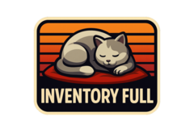
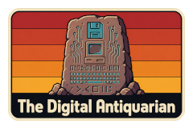

Margot’s Heart of Neon takeaway is less retro-game history than Jeff Minter’s warmth, creativity, and the human communities built around his work.
Wilhelm revisits Art of Rally and spots Over the Hill’s DNA everywhere, even if his own rally runs still end in trees and cautious grandma corners.
Anarchae juggles retail shift anxiety, murder mysteries, Vincent Price, Traitors rankings, sports watching, Fate/GO grinding, and DOS2 progress.
Heartless is happy to bank an ugly Packers win over the Panthers, especially since scoring 27 means an old meme gets another lap.

Bhagpuss reflects on music-post curation, half-remembered YouTube finds, and why discovery still matters even when the tunes barely stick.
Ramen Junkie checks out Beast Box Jetstream, a smaller transforming penguin with tight joints, neat articulation, and a surprisingly fiddly cube conversion.

Jimmy points readers to a fresh Analog Antiquarian post, this time a London-themed detour in his companion site’s worldly-wonders lane.
Jeff cheers UTC killing leap seconds, mainly because a first-ever negative leap second sounded like a great way to break computers everywhere.
Mike wraps RetroChallenge by teaching CamelForth some Halloween tricks, wrangling TMS9918A sprites, loops, and pumpkins onto the Sega SG-1000.
Tim Bray argues CoSocial’s paid, Canadian Mastodon co-op shows how decentralized social media can stay sane, transparent, and mostly troll-free.
Dave Winer jumps from dog-training videos and Claude to blogging, democracy, Google, ChatGPT art, and sports congratulations in classic stream form.
Emily says reading all the Bridgerton books only pushed her further from the show, mostly over its adaptation changes and casting choices.